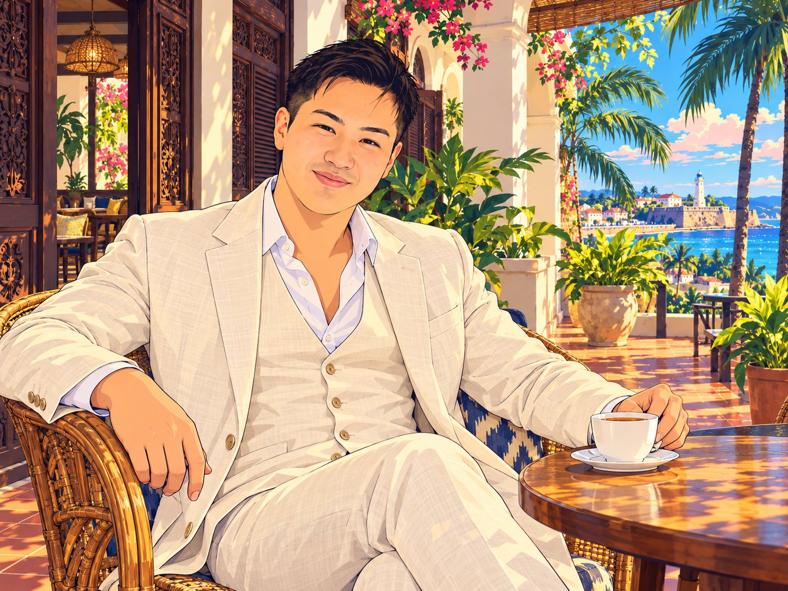
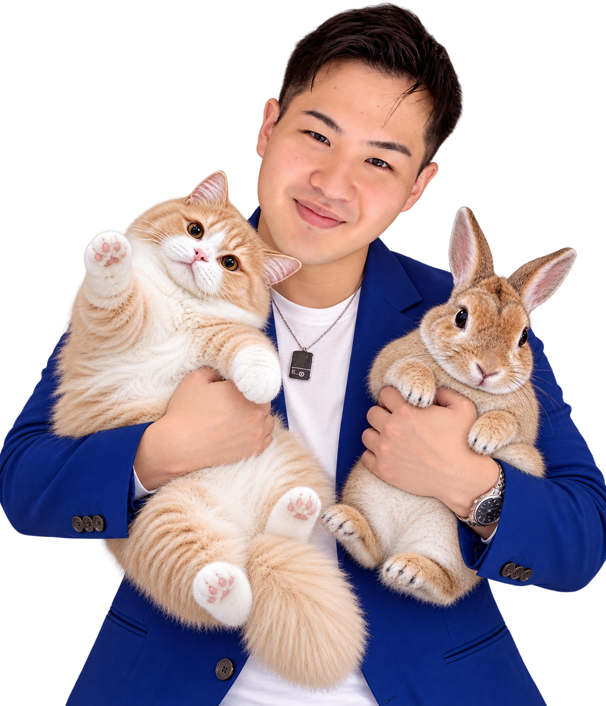
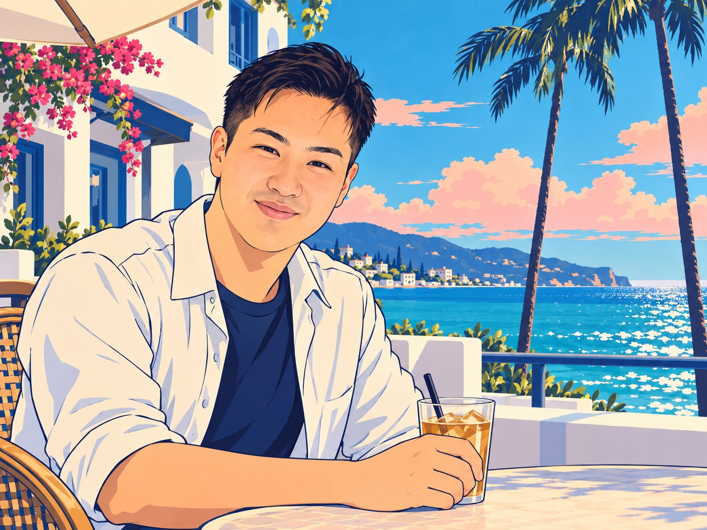

製造業メディア
TAKUMI～匠～
ものづくりが元気になれば、きっと日本も元気になる
日本のものづくりに立ちはだかる情報伝達の障壁を解消し、ものづくり業界の広告費に関する既存の概念と価格を破壊し、本来あるべき収益構造を追求します。特に、大田区のものづくり企業に貢献し、業界を盛り上げていきます。
takumi-nippon.com

たかね みく
人の志を滾らせる
製造業メディア
ものづくりが元気になれば、きっと日本も元気になる
日本のものづくりに立ちはだかる情報伝達の障壁を解消し、ものづくり業界の広告費に関する既存の概念と価格を破壊し、本来あるべき収益構造を追求します。特に、大田区のものづくり企業に貢献し、業界を盛り上げていきます。
takumi-nippon.com
日本語教育・人材
話せる言葉が増えるほど、愛せる世界が増えていく
地理的・経済的な制約を越えて、圧倒的に効率的で、品質にばらつきのない言語教育を、いつでも、どこでも、誰にでも、格安で届けることを目指しています。
現在は人材事業にも関わり、スリランカで言語教育に携わっています。スリランカのみなさんの役に立ち、その取り組みが日本の幸せにもつながるよう、力を尽くしていきます。
「人の志を滾らせる」会社を育てること。
日本のものづくりには、まだ十分に知られていない技術や、その技術を支える人の思いが数多くあります。その価値を伝え、必要としている企業や研究者との出会いを増やしたいと考えています。自分が培ってきた営業・事業開発の経験と、ご縁を生かし、挑戦する人や企業の力になりたいです。
剣道・日本拳法の有段者で、アロマ検定1級も取得しています。自衛隊への入隊経験や、USJでのアルバイト経験もあります。
大学では分子神経細胞学や教育工学を学んでおり、人の体と心、学びへの関心が今の仕事にもつながっています。
現場を知ること、相手の話を聞くこと、考えたことを実際に動く形にすること。
製造業・IT・教育と異なる分野で得た経験をつなぎ、課題の整理から営業戦略、事業の仕組みづくりまで考えることを大切にしています。いただいたご縁に感謝し、相手の期待に仕事で応えることを心がけています。
実績・興味・人脈・スキル
製造業の技術、企業や研究者の挑戦、営業戦略、事業開発、教育、分子神経細胞学、東洋哲学。
プライベートでは、海外旅行、語学、読書、映画、現代アート、都内のグルメに関心があります。
製造業の現場で培った営業経験と、IT・教育分野での顧客支援・事業開発の経験を生かし、企業や技術の価値を伝えられることが強みです。
キーエンス時代には、非接触計測器の法人営業で全国1位を経験しました。「何が優れているのか」に加え、「どのような相手に、どのような言葉で伝えると価値が届くのか」を考えることが得意です。
製造業メディア「TAKUMI～匠～」を通じて、企業の技術や取り組みを伝え、製造業の会社、サービス企業、大手メーカーの実務者、大学・研究機関との出会いを広げていきます。
「会社の技術や取り組みを、もっと多くの人に知ってもらいたいと思っていませんか。キーエンスで製造業の営業を経験し、今は製造業専門の情報メディア『TAKUMI～匠～』を運営している髙根さんという方がいます。製造業の会社だけでなく、製造業向けのサービス企業や、大手メーカーの調達・開発・研究の方、大学などの研究機関とのつながりも探されています。一度おつなぎしましょうか。」
営業戦略を考えることが得意です。「誰に、何を、どう届けるか」「今の営業をどう組み立て直すか」など、いつでもご相談ください。
営業系サービス・マッチング・コミュニティ等のご案内や、販売代理のご依頼はご遠慮いただけるとうれしいです。
弊社は言語教育の立場から外国人材の育成に携わっており、就労や受入れについても知見があります。
こうしたご相談にも、費用はいただきません。



